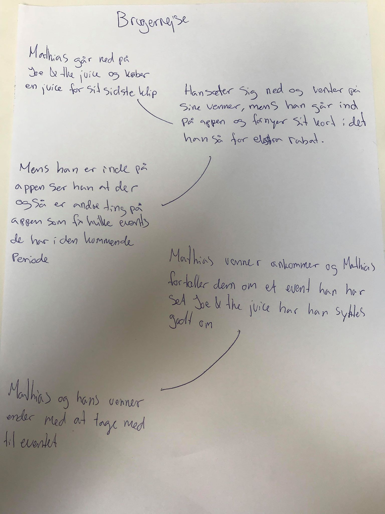
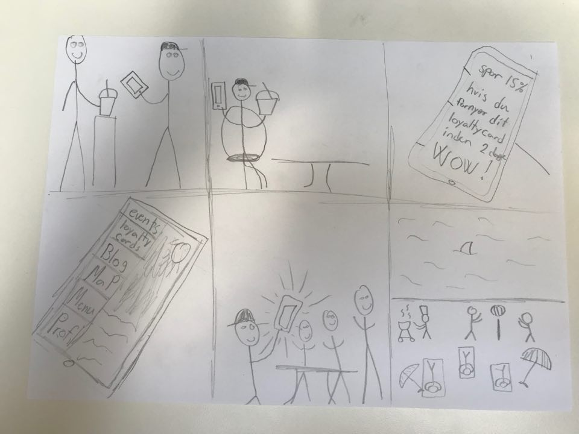
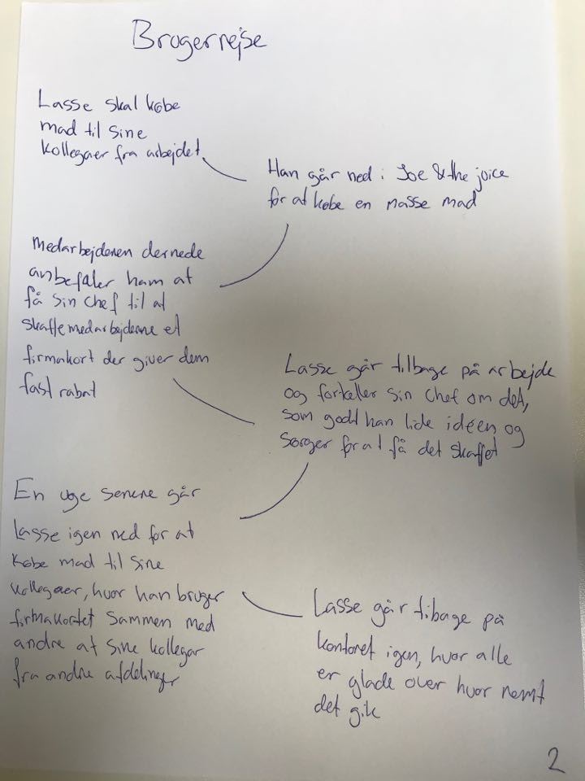
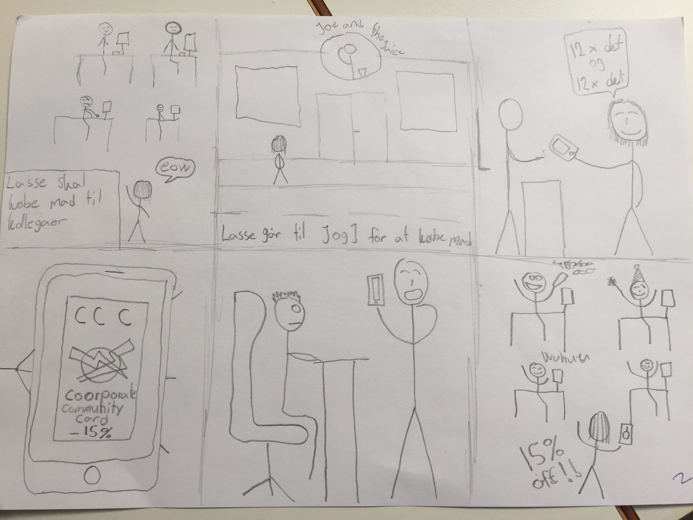

Storyboard
Brugerrejse + Storyboard 1
 Brugerrejse + Storyboard 2
 Brugerrejse 3
Gæst kommer ind i butikken på vej op arbejde Hun køber en juice og en sandwich. Juiceren spørg om han ikke har set hende før. Hun siger det kan godt være jeg kommer altid forbi i min frokost pause.
Juiceren foreslår at når hun alligevel kommer her så tit så kan hun jo spare nogle penge ved at downloade Joe community app og købe et community card. Hun kan få 5 juice og sandwich for kun xxxkr. Hvis du køber den nu så får du jo allerede dit første klip.
Gæsten bliver lidt i tvivl om hun får det brugt i. Men kommer til rette tanker da hun godt kan forestille sig at hun nok skal komme forbi ihvertfald 5 gange i løbet af den næste måned. en fremragende idé. Hun vil da gerne have rabat.
Hun downloader app'en og køber combi kortet.
Imens hun venter på sin ordre kigger hun lidt rundt i app'en. Hun går ind på blog og læser lidt om forskellige events Joe and the juice deltager i. Hun går derfor op og spørg juicer angående deres samarbejde med børnene fonden. En samtale er igang.
Hun ser også at Joe and the juice har et business kort.
Juiceren forklare at business kortet er for firmaer så de kan få en rabat i deres frokost pause. Alle i ansatte får et kort og med det får de 10%.
Hun syns det er en fremragende idé og tænker hun vil give det til alle på arbejdet. Hun får at vide at hun kan tilmelde sig inde på app'en samt alle hendes kollegaer.
Gæsten får sin ordre og går glad og tilfreds fra butikken.
Efter 2 uger kommer gæsten forbi igen men opdager at hun har brugt alle sine klip. Hun overvejer om hun gider at købe et nyt kort. Men ser at hvis hun gør det nu så får hun det billigere end sidst. Så det gør hun.
Efter 6 uger. Har hun. Igen brugt dit kort op og igen kan hun fornye det med en lille rabat. Hun ser så at hun kan tilmelde sig front automatisk så hun ikke behøver at tænke på det. Det gør hun for hun elsker den service og de produkter hun får. Hun. Ser så at hvis hun har en streak på 5 kort i træk kan hun være med i lodtrækningen om en rejse til USA hvor hun kan besøge Joe and the juice.
Kunden er glad tilfreds. Joe af the juice får flere penge end normalt da hun bliver ved med at bruge kort og dermed opretter en vane for at fortsætte med at handle der. Gamification!!